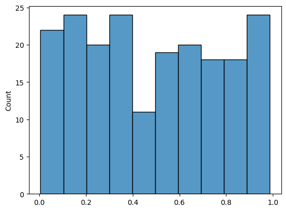
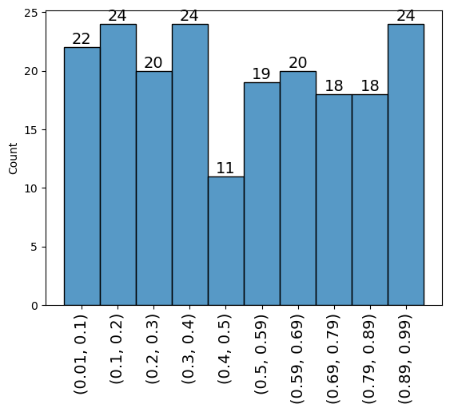

Chương 2 Tháng 02 2024
Ngày 20
Hôm nay mình đã đọc gì
2.0.1 Cách visualize counts và labels cho histogram dùng seaborn và numpy
Thông thường, khi visualize mặc định histogram của seaborn sẽ không thể hiện tất cả các nhãn của bins và số lượng mỗi bin
import numpy as np
import seaborn as sns
np.random.seed(42)
x = np.random.uniform(size=200)
sns.histplot(x, bins=10)
Như trên sẽ rất khó theo dõi các giá trị và số lượng, do đó cần phải tìm được giá trị của các bin và số lượng. May mắn thay seaborn histogram tương tự numpy nên ta có thể dùng hàm np.histogram
counts, bin_labels = np.histogram(x, bins=10)
print(len(counts), counts)
print(len(bin_labels), bin_labels)10 [22 24 20 24 11 19 20 18 18 24]
11 [0.00552212 0.1036586 0.20179508 0.29993156 0.39806804 0.49620453
0.59434101 0.69247749 0.79061397 0.88875045 0.98688694]Các bạn có thể thấy với tham số bins đưa vào chỉ có 10 trong khi kết quả nhãn bin_labels lại có 11 giá trị, trong đó giá trị đầu là giá trị nhỏ nhất của x và giá trị cuối là giá trị cao nhất của x. Do đó khoảng đầu tiên của bin đầu tiên có giá trị nằm từ [0.00552212, 0.1036586)
Để kiểm tra xem có đúng thể không, ví dụ kiểm tra bin đầu tiên có phải 22 phần tử không
22Chính xác!!
Dùng matplotlib để plot text
import matplotlib.pyplot as plt
counts, bin_labels = np.histogram(x, bins=10)
ax = sns.histplot(x, bins=10)
bin_heights = [p.get_height() if p.get_height() > 0 else 0.1 for p in ax.patches]
# Hiển thị giá trị count từng bin
for i in range(len(bin_heights)):
plt.text(ax.patches[i].get_x() + ax.patches[i].get_width() / 2,
bin_heights[i],
str(int(bin_heights[i])),
fontsize=14,
ha='center',
va='bottom')
mids = [rect.get_x() + rect.get_width() / 2 for rect in ax.patches]
labels = [(round(i,2),round(j,2)) for i,j in zip(bin_labels[:-1], bin_labels[1:])]
ax.set_xticks(mids, labels=labels, fontsize=14, rotation=90)